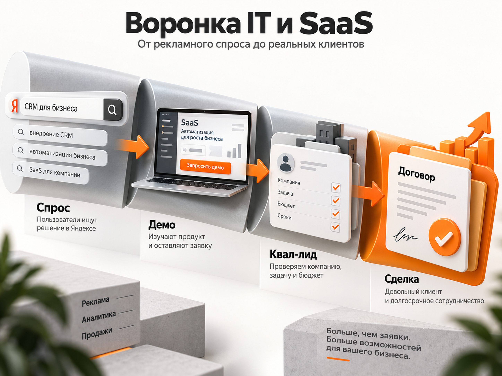
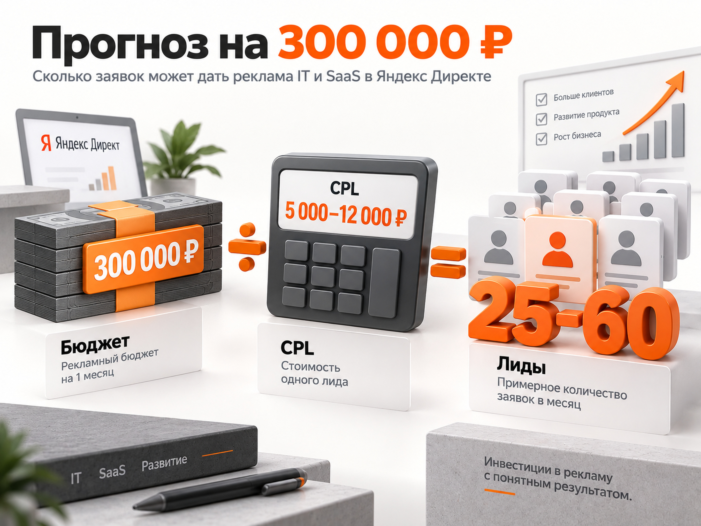

Блог о платном трафике
Продвижение IT-компаний и SaaS для бизнеса: Яндекс Директ, бюджет и прогноз
Для B2B IT-компании или SaaS-сервиса Яндекс Директ может быть одним из основных каналов привлечения клиентов, если люди уже ищут решение проблемы. Но считать такую рекламу только по стоимости заявки опасно.
В IT одна форма на сайте может привести компанию с потенциальным контрактом на миллионы рублей, а другая - студента, соискателя или человека, которому нужна бесплатная консультация. Поэтому нормальная воронка выглядит так:
реклама -> обращение или демо -> квалифицированный лид -> переговоры -> продажа
По свежим российским кейсам разброс действительно большой. У разработчика SaaS-решений после оптимизации получали лиды примерно по 3750 ₽ при бюджете 180 000 ₽ в месяц. В другом SaaS-проекте квалифицированный лид стоил около 5950 ₽ при бюджете 750 000 ₽. В кейсе B2B IT-интегратора первоначальные 480 000 ₽ бюджета и 38 лидов дают расчетную стоимость обращения около 12 630 ₽, а после оптимизации авторы кейса сообщают о снижении CPL до 5800 ₽.
Поэтому для предварительного прогноза по новой IT-компании я бы закладывал не красивую одну цифру, а коридор:
- обычное обращение - примерно 5000-12 000 ₽;
- квалифицированный лид - ориентировочно 8000-20 000 ₽;
- фактическую стоимость клиента считать уже из CRM после первых сделок.
Это не средние показатели рынка, а расчетный диапазон для первоначального медиаплана. Конкретный SaaS может получать регистрации значительно дешевле, а сложная корпоративная разработка или Enterprise-решение - заметно дороже.
Какие IT-компании можно продвигать через Директ
В один прогноз можно объединить несколько близких B2B-направлений:
- SaaS-сервисы для бизнеса;
- CRM, ERP, HelpDesk, BI и системы автоматизации;
- облачные сервисы;
- IT-интеграторы;
- разработку корпоративного ПО;
- внедрение и сопровождение программных продуктов;
- автоматизацию бизнес-процессов;
- информационную безопасность;
- инфраструктурные IT-услуги;
- отраслевые цифровые платформы.
Но рекламировать их одинаково нельзя.
У SaaS основной конверсией может быть регистрация, запрос демо или тестовый период. У интегратора - заявка на расчет проекта, консультацию или аудит. У сложной корпоративной платформы первая конверсия вообще может быть только началом нескольких месяцев переговоров.
Яндекс в своем материале о продвижении IT-продуктов отдельно отмечает сложность B2B-воронки, несколько участников принятия решения, роль демодоступа, кейсов и образовательного контента. Для сформированного спроса одним из основных инструментов остаются Поиск и РСЯ.
Сначала определить, есть ли прямой спрос
Главный вопрос перед запуском Директа - как потенциальный клиент формулирует свою проблему.
Для CRM прямой спрос понятен:
- CRM для строительной компании;
- CRM для отдела продаж;
- внедрение CRM;
- российская CRM система;
- автоматизация отдела продаж.
Для IT-интегратора тоже могут существовать прямые запросы:
- внедрение 1С;
- IT аутсорсинг для компании;
- интеграция CRM с 1С;
- разработка корпоративного портала;
- автоматизация производства.
Но некоторые SaaS создают новый продукт, который никто не ищет по названию категории. Человек знает свою проблему, но не знает, что для нее уже существует отдельный сервис.
В свежем B2B SaaS-кейсе сервиса для бухгалтеров прямого спроса практически не было. Вместо попытки сразу продавать подписку трафик из Яндекс Директа вели на вебинары. При бюджете более 100 000 ₽ в месяц получали более 100 регистраций на мероприятия. Это хороший пример того, почему регистрацию на контент нельзя автоматически считать полноценным коммерческим лидом.
Если прямого спроса мало, задача рекламы меняется. Сначала нужно привести человека на демо, вебинар, аудит, расчет или другой промежуточный шаг, а уже затем продавать продукт.

Как строится воронка IT и SaaS
Для большинства B2B-проектов я бы строил аналитику минимум из четырех уровней.
1. Первичная конверсия
Форма, звонок, регистрация, запрос демо, начало тестового периода.
2. Квалифицированный лид
Компания соответствует целевому сегменту, есть реальная задача, подходящий масштаб бизнеса и потенциальный бюджет.
3. Продвинутый этап продажи
Демонстрация, встреча, техническое задание, пилот, коммерческое предложение.
4. Продажа
Оплата подписки, внедрения, проекта или контракта.
Для SaaS дополнительно нужно смотреть активацию, переход из тестового периода в платный и дальнейшее удержание.
Если оптимизировать рекламу только по первой форме, алгоритм может найти много людей, которые охотно оставляют контакты, но никогда не покупают.
В кейсе B2B IT-платформы «Забота 2.0» проблема была именно такой: маркетинг оптимизировали по CPL, а не по качеству. После перехода к работе с SQL и CAC количество SQL выросло на 314%, а CAC снизился в 2,3 раза. Точные абсолютные цены в кейсе не раскрыты, поэтому использовать эти проценты как прогноз для другой компании нельзя.
Аналитика нужна до запуска рекламы
Для IT и SaaS недостаточно Метрики с целью «отправил форму».
Нужно передавать в CRM:
- источник;
- кампанию;
- объявление;
- поисковый запрос;
- ClientID;
- этап сделки;
- квалификацию;
- сумму продажи или потенциальную ценность сделки.
Затем данные о квалифицированных заявках и продажах желательно возвращать обратно в рекламную систему.
Яндекс позволяет передавать офлайн-конверсии из CRM через Центр конверсий, коннекторы и API. Эти данные можно использовать не только для отчетности, но и для оптимизации рекламных кампаний.
Для длинного B2B-цикла это принципиально. Иначе Директ знает, кто отправил форму, но не знает, кто оказался реальным клиентом.
Как запускать Поиск Яндекс Директа
Поиск я бы ставил на первое место там, где есть сформированный спрос.
Семантику лучше разделять не просто по частотности, а по смыслу.
Прямые запросы
Человек уже ищет нужный продукт или подрядчика:
- SaaS для конкретной задачи;
- программа для автоматизации процесса;
- внедрение определенной системы;
- разработка конкретного решения;
- IT-аутсорсинг;
- интеграция систем.
Это наиболее горячая часть спроса.
Запросы по проблеме
Человек еще не определился с продуктом:
- как автоматизировать обработку заявок;
- как контролировать работу менеджеров;
- автоматизация документооборота;
- учет обращений клиентов;
- автоматизация технической поддержки.
Такие запросы могут давать дополнительный объем, но их качество нужно проверять отдельно.
Отраслевые запросы
Для B2B IT часто выгодно сочетать продукт и отрасль:
- CRM для недвижимости;
- программа для логистики;
- автоматизация стоматологии;
- ERP для производства;
- HelpDesk для IT-компании.
Чем сложнее продукт, тем важнее посадочная страница именно под конкретный сценарий использования.
Минус-слова
IT-семантика быстро собирает информационный и кадровый трафик.
Регулярно приходится исключать запросы со словами:
- обучение;
- курсы;
- профессия;
- вакансии;
- зарплата;
- скачать;
- бесплатно;
- своими руками;
- диплом;
- реферат;
- инструкция.
Точный список зависит от продукта. Для SaaS с freemium слово «бесплатно», наоборот, может быть целевым.
Нельзя вести все IT-услуги на одну страницу
Одна из распространенных ошибок - рекламировать десяток разных услуг на главную страницу IT-компании.
Если человек ищет BI-систему, ему нужна страница про BI. Если ищет автоматизацию склада - страница про автоматизацию склада. Если ищет корпоративный портал - соответствующее решение и кейсы.
На посадочной странице должны быстро отвечать на вопросы:
- какую проблему решает продукт;
- для каких компаний он предназначен;
- что конкретно умеет;
- с чем интегрируется;
- сколько занимает внедрение;
- какие есть кейсы;
- что человек получит после заявки;
- какой следующий шаг.
Для сложной услуги предложение «Оставьте заявку» слабое. Лучше конкретное действие:
- получить демонстрацию;
- обсудить внедрение;
- рассчитать проект;
- получить аудит;
- запустить пилот;
- попробовать сервис.
РСЯ нужна не всем одинаково
Поиск работает со сформированным спросом. РСЯ позволяет расширяться за его пределы.
Для B2B IT можно тестировать:
- ретаргетинг посетителей продуктовых страниц;
- посетителей кейсов и тарифов;
- аудитории конкурентов и смежных решений;
- интересы и привычки;
- сегменты собственной CRM;
- похожие аудитории;
- отраслевые и профессиональные интересы.
Но здесь особенно легко получить дешевые и бесполезные формы.
Поэтому РСЯ желательно оценивать отдельно от поиска минимум по квалифицированным лидам.
Если поиск дает заявку за 9000 ₽ и половина заявок целевые, а РСЯ дает форму за 3500 ₽, но только одна из десяти проходит квалификацию, фактически РСЯ обходится намного дороже.
Демо и бесплатный период подходят не каждому продукту
Для SaaS логично использовать:
Реклама -> регистрация -> активация -> платная подписка
Но считать регистрационные формы полноценными лидами нельзя.
Свежий крупный кейс Speech-to-Text хорошо показывает разницу между массовым SaaS и сложным Enterprise-продуктом. После пересборки Яндекс Директа количество регистраций выросло с 9872 до 24 759, а CPL снизился на 17%. При этом конверсия в регистрацию на десктопе составляла 11,9%, на мобильных устройствах - 6,9%.
Для корпоративной IT-системы такой объем регистраций может быть вообще недостижим, потому что рынок намного уже. Поэтому переносить CPL массового SaaS на IT-интегратора нельзя.
Какой CPL закладывать в прогноз
По найденным свежим и относительно свежим российским кейсам получается слишком большой разброс, чтобы корректно написать: «средняя заявка в IT стоит 6000 ₽».
Но диапазон для планирования теста определить можно.
Для общего B2B IT/SaaS-проекта я бы заложил:
| Показатель | Рабочий прогноз |
|---|---|
| Обычный лид | 5000-12 000 ₽ |
| Квалифицированный лид | 8000-20 000 ₽ |
| Бюджет первого полноценного теста | около 300 000 ₽ |
| Лидов при 300 000 ₽ | примерно 25-60 |
| Квалифицированных лидов при 300 000 ₽ | примерно 15-38 |
Это расчет автора на основании опубликованных кейсов, а не статистическая средняя по российскому IT-рынку.
Диапазон специально широкий. На результат кратно влияют:
- стоимость продукта;
- прямой поисковый спрос;
- регион;
- известность компании;
- конкуренция;
- сложность внедрения;
- посадочная страница;
- наличие кейсов;
- длительность продажи;
- требования к размеру бизнеса клиента.

Прогноз для бюджета 300 000 ₽
Возьмем условную B2B IT-компанию или SaaS-сервис, который работает по России.
Рекламный бюджет - 300 000 ₽ в месяц.
При CPL 5000-12 000 ₽:
300 000 / 5000 = 60 лидов
300 000 / 12 000 = 25 лидов
Расчетный результат первого этапа - примерно 25-60 обращений в месяц.
Если квалифицированный лид обходится в 8000-20 000 ₽:
300 000 / 8000 = 37,5
300 000 / 20 000 = 15
Получаем примерно 15-38 квалифицированных лидов.
Это уже более полезный ориентир, чем количество заполненных форм.
Прогноз количества продаж без данных конкретной компании я бы не делал. Если один отдел продаж закрывает 20% квалифицированных лидов, а другой только 5%, стоимость привлеченного клиента отличается в четыре раза при абсолютно одинаковой рекламе.
Сколько денег нужно для первого теста
Универсального минимального бюджета нет.
Для узкого SaaS с небольшим количеством коммерческих запросов можно начать дешевле. Для нескольких IT-направлений по всей России 50 000-100 000 ₽ легко распределятся настолько тонким слоем, что по отдельным сегментам не получится накопить нормальную статистику.
Для расчетного проекта с несколькими направлениями разумной отправной точкой я считаю около 250 000-300 000 ₽ рекламного бюджета на месяц.
При прогнозном CPL 5000-12 000 ₽ это потенциально дает примерно 21-60 первичных обращений. Уже можно сравнить продукты, запросы, посадочные страницы и качество лидов.
Это не минимальный бюджет Яндекс Директа и не обязательное условие запуска. Это рабочий масштаб теста для рассматриваемого общего кейса.
Как выбирать стратегию в Директе
Я бы не начинал с требования «платить только за квалифицированный лид».
Если таких конверсий происходит несколько в месяц, алгоритму просто мало данных.
На старте можно оптимизироваться по более частому, но достаточно качественному действию:
- заявке на демо;
- заполненной форме;
- регистрации;
- звонку;
- запросу расчета.
После накопления данных и передачи статусов из CRM можно постепенно смещать оптимизацию глубже по воронке.
Яндекс прямо указывает, что офлайн-конверсии дают стратегии больше информации о пользователях и позволяют использовать события из CRM для оптимизации рекламы.
При этом не стоит автоматически дробить небольшой объем данных на десятки кампаний. Если на каждую кампанию приходится по две конверсии в месяц, автоматике сложнее находить закономерности.
Что еще использовать кроме Яндекс Директа
Для IT и SaaS я бы не рассчитывал на один канал.
SEO и экспертный контент
Хорошо работают страницы:
- сравнение решений;
- продукт против продукта;
- решение конкретной бизнес-задачи;
- интеграции;
- отраслевые сценарии;
- кейсы внедрения;
- инструкции.
Такой контент одновременно получает поисковый трафик и помогает пользователю, который уже пришел из рекламы и проверяет компанию.
Telegram Ads
Подходит, если целевая аудитория концентрируется в профессиональных каналах и сообществах.
Для подписочных IT-продуктов особенно важно считать не переход, а оплату и дальнейшее удержание. В моем кейсе продвижения VPN-сервиса через Telegram Ads 3570 пользователей запустили бота по 0,29€, а стоимость покупки подписки удерживалась ниже заданного KPI 800 ₽. Механика B2C VPN отличается от корпоративного SaaS, но принцип тот же: дешевый верх воронки сам по себе ничего не говорит о деньгах.
Подробнее о кейсе продвижения VPN-сервиса через Telegram Ads - в кейсе продвижения VPN-сервиса через Telegram Ads.
Повторная работа с аудиторией
При длинном цикле сделки полезны ретаргетинг, email, контент, кейсы, вебинары и повторные касания.
Человек может увидеть рекламу сегодня, запросить демо через месяц, а купить через три месяца. Оценка одной последней сессии такую цепочку легко искажает.
Главные ошибки продвижения IT и SaaS
Считать любую форму лидом.
Главный показатель для B2B - качество обращения и дальнейшее движение по воронке.
Смешивать все продукты в одной кампании.
CRM, разработка, интеграция и техническая поддержка имеют разный спрос и разную экономику.
Отправлять всех на главную страницу.
Реклама и посадочная должны отвечать одной и той же задаче.
Оптимизироваться только по CPL.
Дешевые формы могут оказаться самыми дорогими после квалификации.
Не передавать продажи обратно из CRM.
В результате рекламная система продолжает искать людей, похожих на тех, кто оставляет формы, а не на реальных клиентов.
Запускать РСЯ без контроля качества.
В B2B она способна дать много дешевых обращений, которые никогда не станут сделками.
Слишком сильно дробить кампании.
Для узкого IT-сегмента это приводит к недостатку статистики внутри каждой отдельной кампании.
Продавать сложный продукт холодной аудитории сразу.
Иногда сначала нужны кейс, вебинар, аудит, демо или пилот.
Пошаговый план запуска
- Разделить продукты и услуги компании.
- Определить ICP для каждого направления.
- Собрать прямой коммерческий и проблемный спрос.
- Проверить объем запросов и конкуренцию.
- Сделать отдельные посадочные под основные направления.
- Настроить Метрику, CRM и передачу ClientID.
- Разделить первичный лид и квалифицированный лид.
- Запустить Поиск на наиболее сформированный спрос.
- Отдельно тестировать РСЯ и ретаргетинг.
- Еженедельно анализировать поисковые запросы и качество заявок.
- Передавать квалификацию и сделки из CRM обратно в аналитику.
- Масштабировать не самые дешевые кампании, а те, которые дают приемлемую стоимость квалифицированного лида и клиента.
Подробно про общую механику B2B-рекламы я разбирал в статье «Яндекс Директ для B2B».
Итоговый прогноз
Для общего B2B IT/SaaS-проекта Яндекс Директ я бы рассматривал как основной канал работы со сформированным спросом.
Для первоначального расчета можно использовать 5000-12 000 ₽ за первичное обращение и 8000-20 000 ₽ за квалифицированный лид.
При бюджете 300 000 ₽ в месяц это дает прогноз порядка 25-60 обращений или 15-38 квалифицированных лидов.
Дальше ориентир должен заменяться фактическими данными конкретного бизнеса.
Для SaaS конечной метрикой становится стоимость платного клиента с учетом удержания и LTV. Для IT-услуг - стоимость контракта и прибыль с проекта. В обоих случаях цель рекламы одна: не получать максимально дешевые формы, а приводить компании, которые доходят до денег.